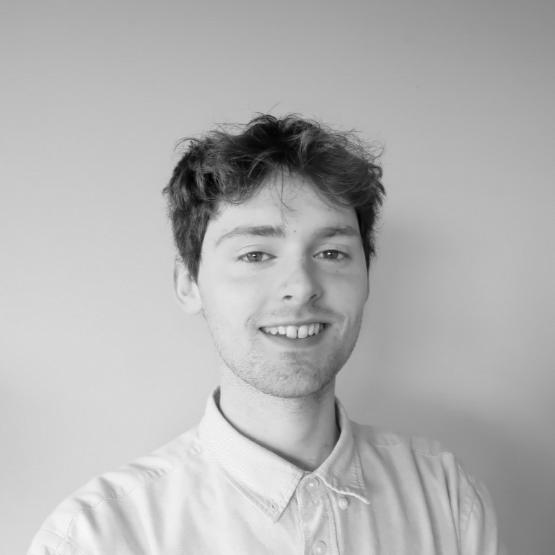
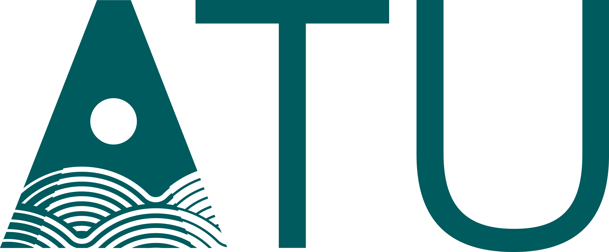
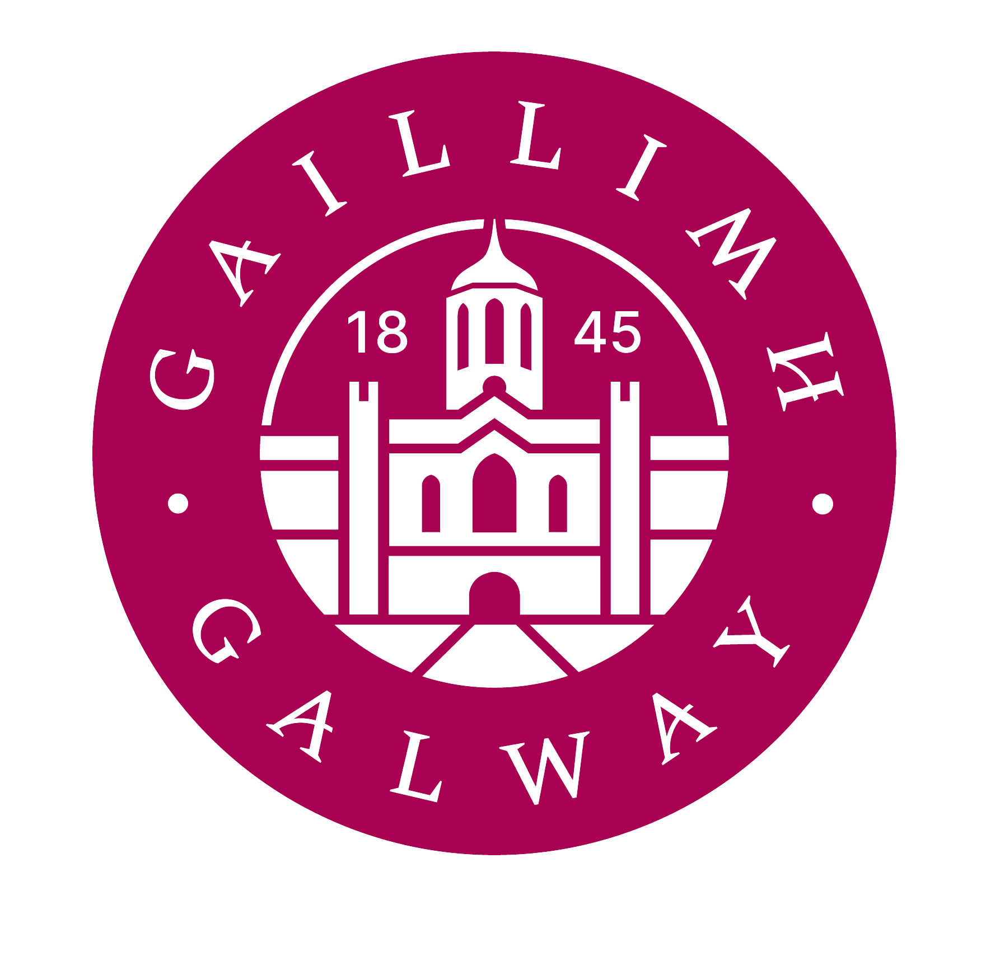

I’m Mark Roe, a final year undergraduate studying Physics & Instrumentation at Atlantic Technological University (ATU), Galway. My academic journey began at Trinity College Dublin (TCD), where I studied Physics through the BA in Physical Sciences. I later transferred into third year of the BSc in Physics and Instrumentation at ATU, where I’m currently enrolled.
Most recently, I’ve undertaken a summer research placement at the Centre for Astronomy, University of Galway (UG), working on simulations for the European Extremely Large Telescope (ELT) and its MORFEO extrema Adaptive Optics system.
My academic interests span a wide range of physics topics, as well as broader questions related to science and its role in the world. Lately, I’ve explored several small-scale design projects such as a beam deflection surface profilometer which received the Hanley Calibration Technical Excellence award.
You can find some small examples of my work in the Portfolio section so do feel free to check it out and don’t hesitate to get in touch if you have any questions!


